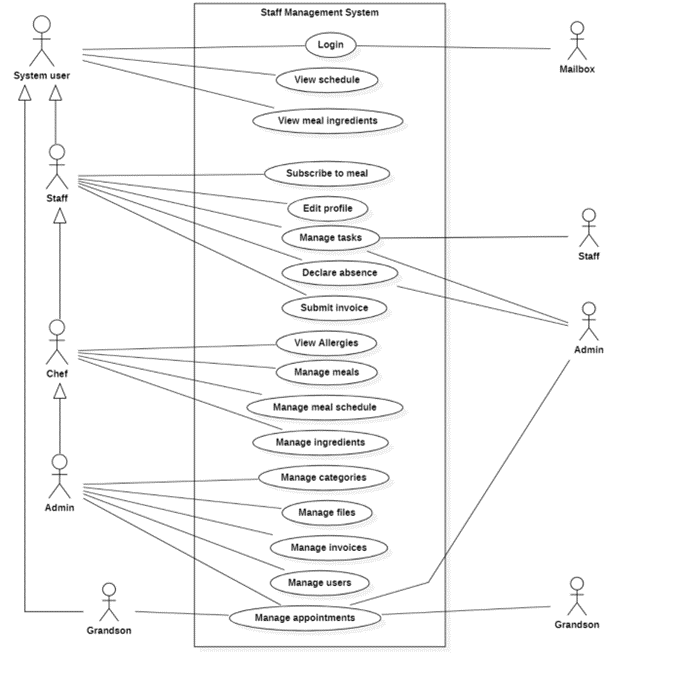
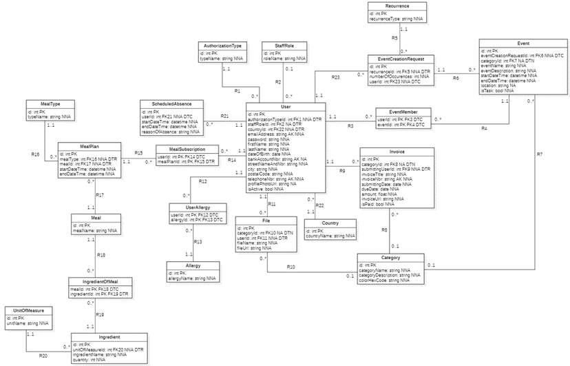
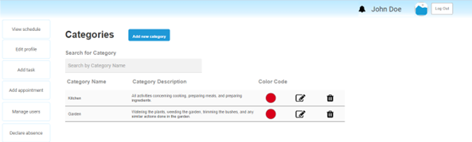
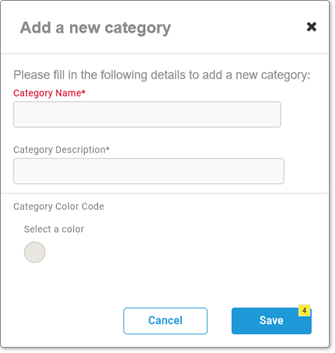
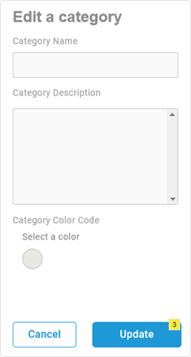
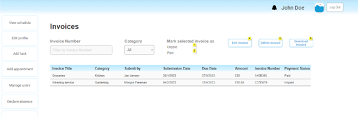
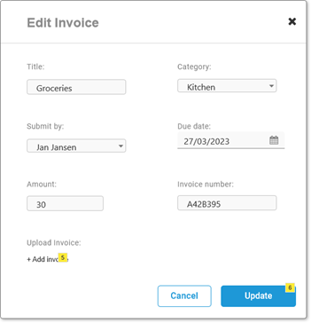

Requirements Analysis for Staff Management System
This project was part of my Requirements Analysis class at Thomas More. In this project, I worked with a team to make a web application for a client who is an au pair.
Background information
Our client, an au pair for an elderly couple in England, needs a web application to help her manage her tasks and work more efficiently. The application needs to keep an overview of when staff is working, keep track of paperwork and invoices, remember recurring appointments and tasks, and plan meals. Currently, the system is chaotic, with some information on paper and some online, making it easy to lose track of what is happening. The client is also responsible for keeping track of the Andersons' autistic grandson, she would like to have an overview of when he is visiting and be able to schedule things with him. The goal of the project is to develop a central web application for the Anderson household staff, that will help the head of the household and the au pair easily maintain an overview of everything that is happening and plan the meals for the staff.
About this app
The main goal of the application is to make the job of all staff and family members easier and more efficient by improving communication, organization, and accessibility of information. The system will focus on ease of use and speed for the elderly couple, au pair, and staff.
My role in the project
I was appointed as the scrum master, this meant that I will keep track of everyone's work and that everything is going as planned. I was also responsible for designing the prototypes of the pages to manage invoices and categories in the system. As a team, we worked together and discussed how to model the database for this system.
Besides the previously mentioned tasks, I was specifically resonsible at the end for reviewing and proofreading the team's report, checking the consistency of it, and finally submitting it.
Project Demo
StarUML was the used software to model the diagram and ERD.
Use Case Diagram
Entity Relationship Diagram ERD
Prototypes
I was responsible for making the prototypes for the pages to manage categories and invoices. Axure is the used software here.
    Feel free to view the entire prototype by downloading the full Axure file: Download Prototypes
What I learned during this project
Soft Skills
- Team work.
- Communication in a non-technical way with clients.
- Agile working and Scrum.
- Time management.
- Recognizing different client needs for different clients, and taking user friendliness into account.
Technical Skills
- Making use case diagrams using StarUML.
- Making ERDs using StarUML.
- Prototyping using Axure.
- Making a design report.
- Working with Trello.
- Using Microsoft Teams to communicate.